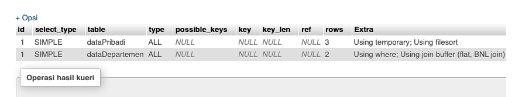

Tentang Evaluation Plan
Apa itu sebenarnya evaluation plan ? Evaluation plan ini menetapkan detail evaluasi seperti apa saja yang akan dievaluasi dan bagaimana nantinya cara mengevaluasinya. Nah, evaluation plan di query pada DBMS ini berguna agar optimizer dapat memutuskan nantinya evaluasi mana yang akan dipilih.
Evaluation Plan di mySQL
Cara untuk menampilkan Evaluation Plan untuk tiap DBMS berbeda-beda. Kali ini, saya akan mengambil contoh evaluation plan di MySQL. Apa saja yang harus disiapkan dan bagaimana caranya? Berikut keterangannya :
01
Siapkan Database
Buat terlebih dahulu suatu database, lengkap dengan tabel-tabelnya di mySQL
02
Tentukan Perintah Query
Maksudnya, perintah query apa yang ingin dilakukan dengan tabel itu, contohnya apakah inner join, left join, select atau perintah lainnya
03
"EXPLAIN"
Tambahkan "EXPLAIN" sebelum perintah query yang akan dievaluasi. "EXPLAIN" inilah cara untuk menampilkan evaluation plan di mySQL
Di bawah ini adalah contoh dari saya mengenai penggunaan explain untuk evaluation plan di mySQL. Sebelumnya, saya telah membuat sebuah database yang berisi 2 tabel, tabel dataPribadi dan tabel dataDepartemen. Di dataPribadi terdapat kolom id, nama, nim, dan kodeDept. Untuk tabel dataDepartemen terdapat kolom idDept, kodeDept dan namaDept. Lalu, saya ingin menampilkan data setelah melakukan left join. Maka, kodenya di mySQL sebagai berikut :
Bagaimana hasil dari perintah query di atas ? Apa saja penjelasan hasilnya ?

id
Kolom ini berisi identifier dari select, untuk contoh ini idnya 1
select_type
Pada contoh ini, isinya yaitu simple. Ini berarti bahwa tipe select yang digunakan keduanya adalah tipe select sederhana bukan gabungan select.
table
Kolom ini berisi nama tabel yang digunakan untuk proses query yaitu dataPribadi dan dataDepartemen
type
Kolom type berisi all, yang artinya pemindaian tabel lengkap dilakukan untuk setiap kombinasi baris dari tabel.
possible_keys
Di kolom ini, berisi null artinya tidak ada indeks dari kedua tabel yang dapat membantu query
key
Di kolom pada contoh diatas berisi null artinya tidak ada key yang digunakan.
key_len
Di kolom ini harusnya berisi panjang key yang digunakan. Tetapi karena tidak ada key yang digunakan maka menghasilkan null
ref
Di kolom ini seharusnya menampilkan nama kolom dari tabel yang diproses dengan key. Tetapi, untuk contoh ini tidak ada key yang dignakan sehingga kolom ref juga berisi null.
rows
Kolom rows ini berisi jumlah baris di tabel itu yang harus diperhatikan untuk mengeksekusi query. Untuk tabel dataPribadi berisi angka 3, artinya ada 3 baris yang dicek untuk memproses query ini. Di tabel dataMahasiswa,
berisi 2 artinya ada 2 baris yang dicek untuk proses query ini
extra
Kolom ini berisi informasi tambahan bagaimana mySql akan mengeksekusi query. Dari contoh diatas, untuk tabel dataPribadi, tertulis using temporary dan using filesort. Ini artinya, untuk mengeksekusi query di tabel ini,
mySql harus membuat suatu tabel sementara dan nanti akan melakukan proses tambahan yaitu sorting untuk mengambil baris dalam urutan yang diurutkan. Untuk tabel dataDepartemen, berisi using where dan using join buffer
(flat, BNL, join). Using where artinya untuk mengeksekusi tabel dataDepartemen mmysql menggunakan where. Using join buffer (flat, BNL, join) artinya karena tabel ini merupakan outer table dan memerlukan buffer, BNL
ini berarti algoritma join yang digunakan yaitu Block Nested-Loop.
Kesimpulan
id
Kolom ini berisi identifier dari select, untuk contoh ini idnya 1
select_type
Pada contoh ini, isinya yaitu simple. Ini berarti bahwa tipe select yang digunakan keduanya adalah tipe select sederhana bukan gabungan select.
table
Kolom ini berisi nama tabel yang digunakan untuk proses query yaitu dataPribadi dan dataDepartemen
type
Kolom type berisi all, yang artinya pemindaian tabel lengkap dilakukan untuk setiap kombinasi baris dari tabel.
possible_keys
Di kolom ini, berisi null artinya tidak ada indeks dari kedua tabel yang dapat membantu query
key
Di kolom pada contoh diatas berisi null artinya tidak ada key yang digunakan.
key_len
Di kolom ini harusnya berisi panjang key yang digunakan. Tetapi karena tidak ada key yang digunakan maka menghasilkan null
ref
Di kolom ini seharusnya menampilkan nama kolom dari tabel yang diproses dengan key. Tetapi, untuk contoh ini tidak ada key yang dignakan sehingga kolom ref juga berisi null.
rows
Kolom rows ini berisi jumlah baris di tabel itu yang harus diperhatikan untuk mengeksekusi query. Untuk tabel dataPribadi berisi angka 3, artinya ada 3 baris yang dicek untuk memproses query ini. Di tabel dataMahasiswa, berisi 2 artinya ada 2 baris yang dicek untuk proses query ini
extra
Kolom ini berisi informasi tambahan bagaimana mySql akan mengeksekusi query. Dari contoh diatas, untuk tabel dataPribadi, tertulis using temporary dan using filesort. Ini artinya, untuk mengeksekusi query di tabel ini, mySql harus membuat suatu tabel sementara dan nanti akan melakukan proses tambahan yaitu sorting untuk mengambil baris dalam urutan yang diurutkan. Untuk tabel dataDepartemen, berisi using where dan using join buffer (flat, BNL, join). Using where artinya untuk mengeksekusi tabel dataDepartemen mmysql menggunakan where. Using join buffer (flat, BNL, join) artinya karena tabel ini merupakan outer table dan memerlukan buffer, BNL ini berarti algoritma join yang digunakan yaitu Block Nested-Loop.
Jadi, berdasarkan semua keterangan yang ditampilkan, kita bisa menyimpulkan, bahwa query yang dieksekusi diatas belum optimal. Mengapa ? Alasan pertama yaitu karena tidak adanya key/indeks yang dapat membantu proses querynya. Padahal,
dengan adanya index/key ini dapat memberi manfaat bagi query untuk lebih optimal dan mempercepat proses penentuan lokasi pencarian data.
Kedua, yaitu karena pada kolom extra, tertulis using temporary, yang mana mySQL harus
terlebih dahulu membuat sebuah tabel sementara yang memperlambat proses dan using sorting file juga menghambat performance mySQL.
Solusi yang bisa kita ambil agar query di mySQL ini lebih optimal, yaitu menggunakan key/indeks
untuk prosesnya dan jika ingin melakukan sorting seperti order by sebaiknya bukan di DBMSnya tetapi di PHPnya saja, karena ini sangat memberatkan kerja database.